About this journal
Our engineering record for the WRO 2026 Asia final: what we built, why, how we tested it, and what went wrong on the way.
We built this journal from the pages in our repository: the five criterion pages in docs/, src/README.md, Models/README.md and Vehicle_Photos/README.md. The numbers, dates and results here are the ones those pages give, and each chapter names the pages it draws on.
The repository is github.com/BllueWave/WRO-Future-Engineers-2026. The two competition sketches are src/Open_Challenge/Open_Challenge.ino (283 lines) and src/Obstacle_Challenge/Obstacle_Challenge.ino (1,103 lines).
Rule numbers and page numbers such as rule 11.1 (p.23) refer to the WRO Future Engineers 2026 rules.
| Label | What it means |
|---|---|
| Mat | Seen on our real car, on a practice mat or at the national round. |
| Simulation | From real2, our simulator. It is harsher than the real car, so we use its numbers only to compare code versions. |
| Build | Compiler output from the Arduino IDE toolchain. |
| Rule | A requirement in the 2026 rules. |
| Team | Measured or recorded by the team on the car. |
Contents
Goals and constraints
The rules fixed the size of the car, how it steers, how it starts and what its sensors have to see. Our own parts added limits of their own: flash, RAM, pins and the camera's view.
Sources: Mobility · Engineering decisions: constraints · Software and strategy · Arena page
1.1What the car has to do
Open Challenge
Three laps of the track with no pillars, then a stop in the start section. The corridors are 600 or 1000 mm wide (p.11), drawn at random before the round. Our full score for a round is three laps and a stop in the start section, 30 of 30. Three laps with a stop outside the start section give 27 points.
Obstacle Challenge
We start inside the parking lot for 7 points (item 1.8.1, p.21), drive three laps in 1000 mm corridors past red and green pillars, then park. Red means keep to the right of the lane and green to the left (p.6). A full parallel park gives 15 points and a partial one 7 (items 1.8.2 and 1.8.3, p.21).
The field sets the geometry the sensors work in: walls 100 mm high, pillars 50 × 50 × 100 mm, and a racetrack 3000 × 3000 mm inside the walls. We built a model of the field to the 2026 rulebook, so we could look at a legal random draw before testing a strategy on the mat.
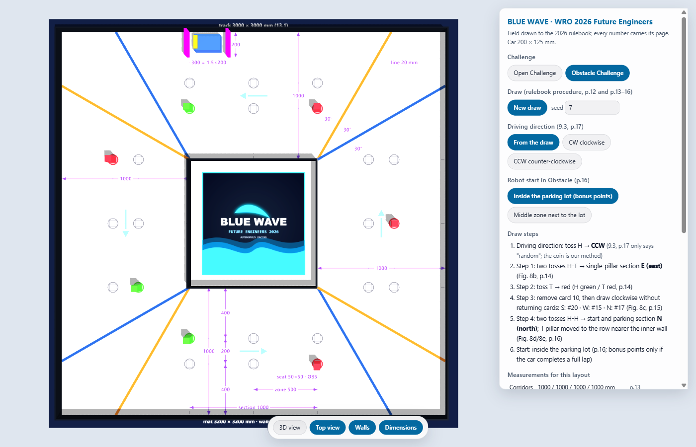
1.2Rules that shaped the design
| Rule | What it asks | What we built |
|---|---|---|
| 11.1, 11.2 (p.23) | At most 300 × 200 × 300 mm and 1.5 kg | A car of 200 × 125 mm: 100 mm shorter and 75 mm narrower than the limit |
| 11.3, 11.5 (p.23); note on p.5 | Four wheels, one steering actuator, no motor per side; the drive wheels physically connected | A 1:28-class RC chassis: one motor through the chassis gearbox, one servo on an Ackermann linkage |
| Parking lot (p.8) | 1.5 × the car length long and 200 mm wide | A 300 mm lot for our car: 50 mm at each end and 75 mm across when centred |
| Open corridors (p.11) | 600 or 1000 mm wide | At 125 mm wide the car leaves 475 mm of free width in a 600 mm corridor |
| 13.4, 13.6 (p.26) | Black walls | HC-SR04 sonars, which time an echo of sound whatever the colour or the light |
| 13.21, 13.22, 13.27 | Red and green pillars, magenta parking limiters | Pixy2 signatures 1 red, 2 green, 3 magenta |
| 9.10, 9.11, 9.14 (p.17) | One switch turns the car on; it then waits for one start button; pressing it starts the round | One main power switch; a start input on A2; #define PRACTICE 0 in both sketches |
| 9.9 (p.17), 13.18 (p.27) | No sensor calibration in preparation time; testing rounds for tuning to the venue colours | All calibration and Pixy2 training done in practice time |
1.3Limits from our own parts
| Constraint | Number | Effect on the design |
|---|---|---|
| Flash | 32,256 B on the Uno | The Obstacle sketch uses 29,604 B (91 %). A new feature must fit, or replace debug print text |
| RAM | 2,048 B | Obstacle globals use 818 B. A 316 × 208 camera frame (65,728 px) could never fit, so the Pixy2 sends block lists |
| PWM pins | 6 on the Uno, 5 taken by sonars, the servo timer and SPI | One motor channel, on D3 |
| Camera view | 60 degrees horizontal | The first pillar after a corner can be out of view |
| Side sonar geometry | About 40 degrees from the nose | Only a bearing-free law (left minus right) works; corner ties need a vote |
| Toolchain | We upload from the Arduino IDE | One .ino per challenge; sizes checked with the IDE's own compiler |
| Time | The v20 sketches were finished on 15 Sep 2026 | Software changes come first; a hardware change such as a rear sonar needs its own test time on the mat |
Hardware decisions
For each main part: why we chose it, and the trade-off we accepted with it. Many of those trade-offs show up again in the code.
Sources: Mobility · Power and sensors · Engineering decisions: why we chose these parts · Models · Vehicle photos
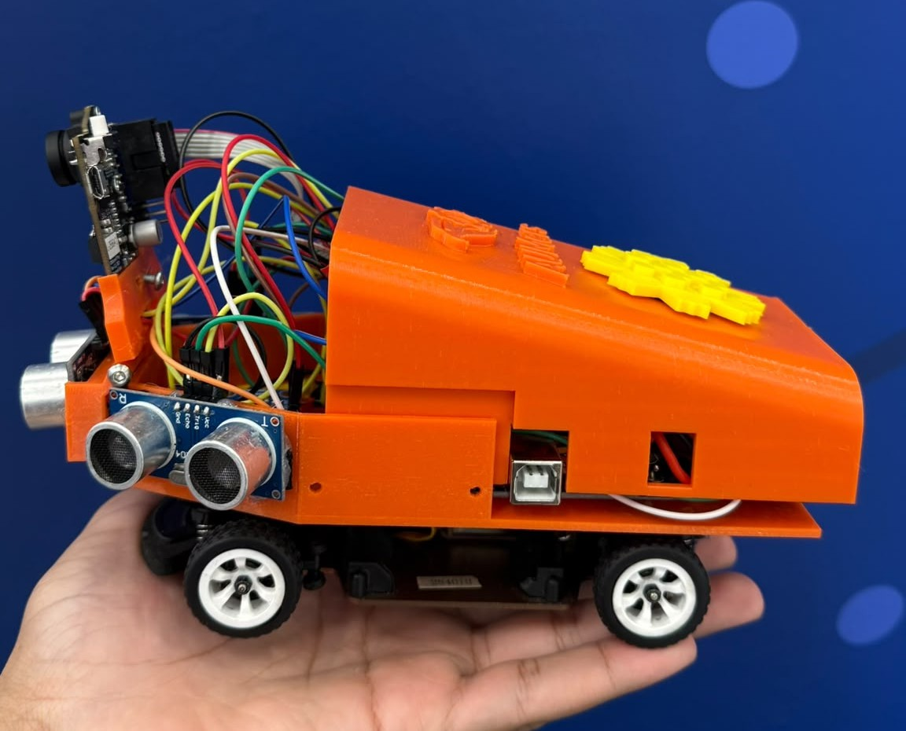
Left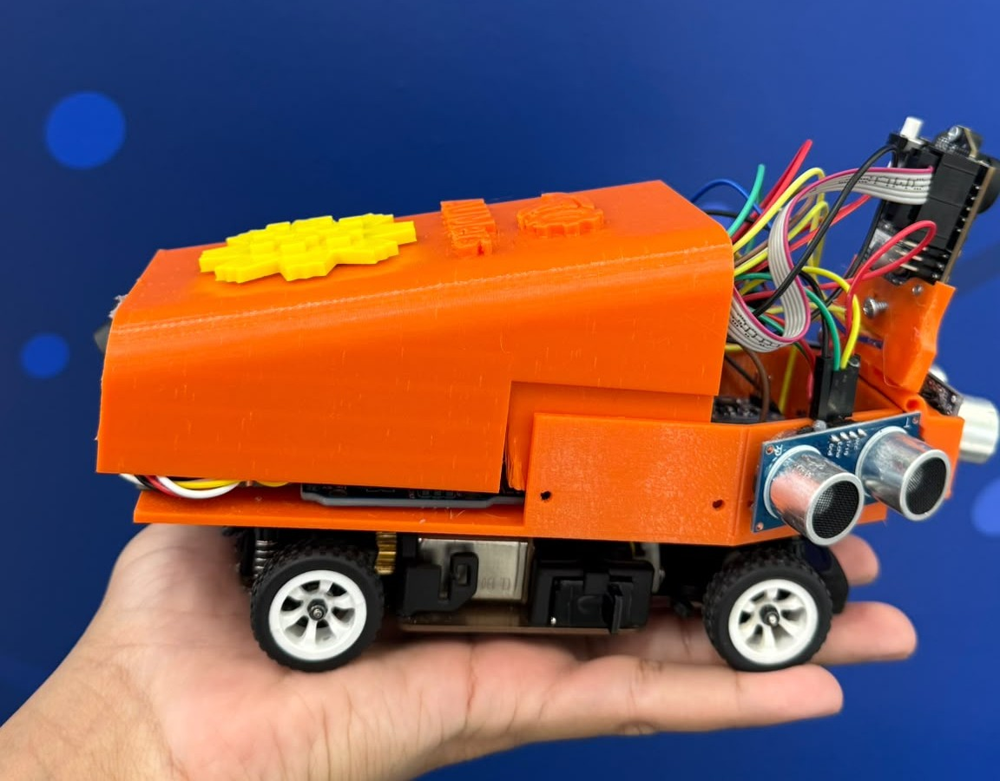
Right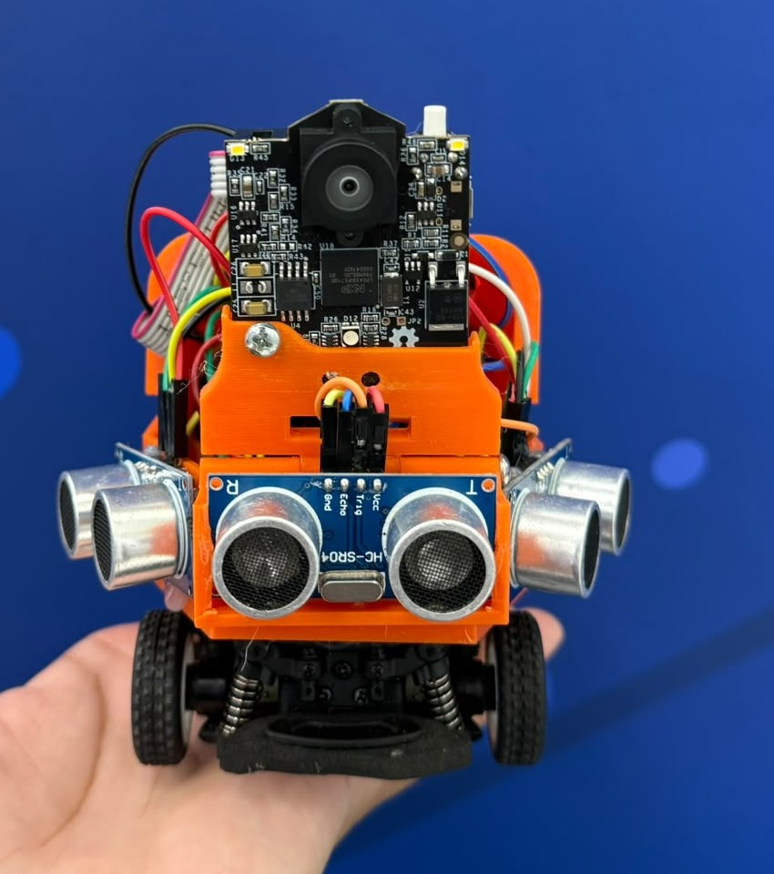
Front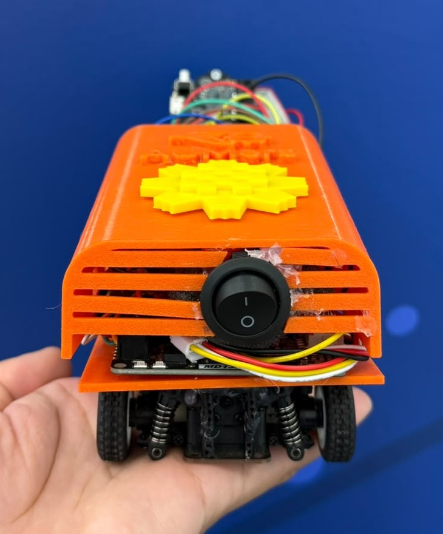
Back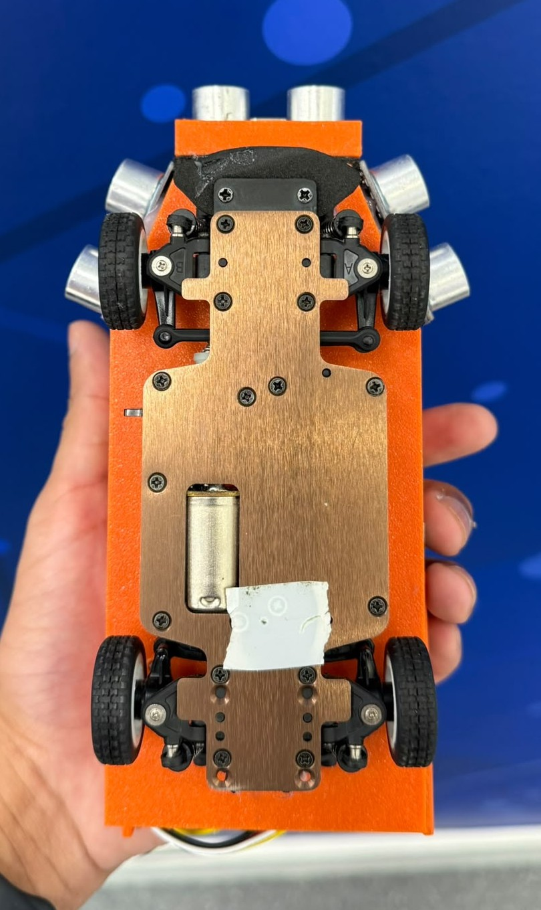
Bottom| The car at a glance | |||
|---|---|---|---|
| Size | About 200 × 125 mm (limit 300 × 200 × 300 mm, 1.5 kg) | Distance | 3 × HC-SR04: one straight ahead, one on each nose corner at about 40° |
| Chassis | WLtoys 1:28-class RC chassis, four wheels, Ackermann front axle | Heading | BNO055 IMU on I2C (A4, A5) |
| Controller | Arduino Uno R3: 32,256 B flash, 2,048 B RAM | Camera | Pixy2 on SPI (ICSP): signature 1 red, 2 green, 3 magenta |
| Drive | One brushed DC motor on a Cytron MD13S (PWM D3, DIR D8); race setting PWM 30, about 1 m/s | Power | Battery 1 for the MD13S; battery 2 through the main switch to the Uno's VIN |
| Steering | Servo on D10; 30-160 while driving, 10 and 170 when parking | Start | Waits for the start switch on A2 after power-on |
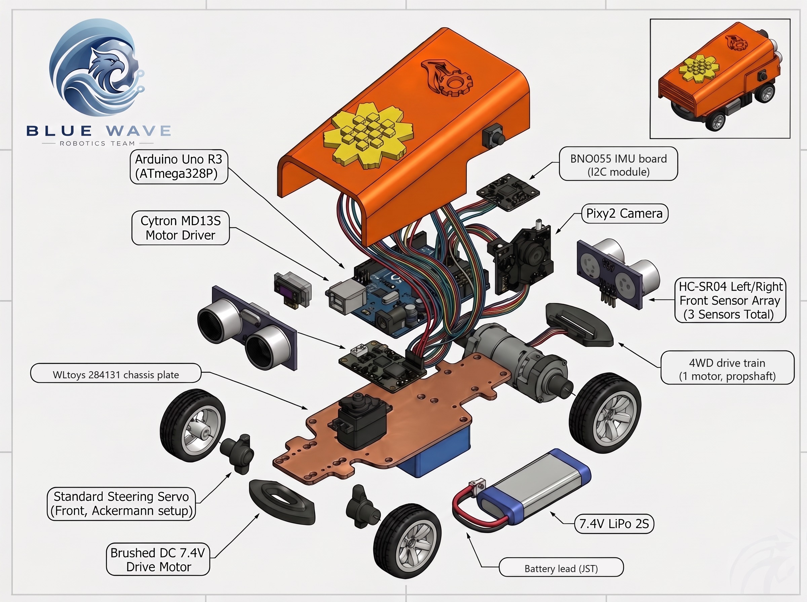
2.1Chassis, drive and steering
- Size. 200 × 125 mm is inside the 300 × 200 mm limit, and the car fits its 300 mm lot with 50 mm to spare at each end.
- Rules. Four wheels, front Ackermann steering moved by one servo, and one motor through the chassis gearbox meet rules 11.3 and 11.5.
- Time. Wheels, gearbox and steering linkage came built. Our work went into the printed body, the sensors and the code.
- The brushed motor needs PWM 25 to start from rest: PWM 15 does not move the car and 18 only creeps. The code adds a 70 ms kick at PWM 55.
- The chassis has no wheel encoder. The park measures its step length with the front sonar and closes every arc on the IMU heading.
The lot end clearance is always (1.5 L − L) / 2 = 0.25 L. Because the lot grows with the car's length, a shorter car gains no end clearance. Only width changes the side clearance: at 125 mm the car fills 62.5 % of the 200 mm depth.
Speed
analogWrite is 8-bit, so our race setting PWM 30 is 30 / 255 = 11.8 % duty. Our speed anchor is a real run: the car drove the three Open laps in about 23 s with open_kuwait at PWM 30, timed with a stopwatch Mat. Our simulator had assumed 520 mm/s at PWM 30 and predicted 40-48 s. Refitted to the real run it gives about 998 mm/s, band 867-1176 mm/s. As a rough check, a lap along the centre line of 1000 mm corridors is 8 m, and three laps in 23 s is 1.04 m/s.
Running the whole Open round at PWM 37 finished in about 20 s but succeeded in 28 of 40 simulated rounds, against 34 of 40 at PWM 30 Simulation. So the Open sketch goes up to PWM 38 only on straights that stayed calm in lap 1, and the Obstacle sketch runs PWM 36 only on straights that showed no pillar in lap 1.
Steering
| Setting | Servo value | Where |
|---|---|---|
| Straight ahead | 90; above 90 steers left, below 90 right | Both sketches |
| Driving limits | 30-160: 70 degrees left, 60 right | Obstacle_Challenge.ino line 88 |
| Front avoid | 90 + 70 × urgency left, 90 − 60 × urgency right | line 638 |
| Pillar mode slew | At most 6 degrees per control loop | line 99 |
| Parking full lock | 10 (right) and 170 (left) | line 107 |
The rear-axle centre of an ideal Ackermann car follows a circle of radius R = L / tan δ. The park code uses R = 170 mm (R_PARK_MM) and models every arc about a point on the rear-axle line. At the nominal 50-degree entry an arc moves the rear axle 0.77 R along the lot and 0.36 R across it, 130 mm and 61 mm. Every 10 mm of error in R moves the end of that arc about 8 mm along and 4 mm across; the final heading does not change, because the arc is closed on the IMU.
2.2Controller and motor driver
- One Uno runs each challenge sketch in a fixed loop and starts the moment it is powered.
- It uploads from the Arduino IDE in seconds.
- It has a library for each part that needs one: Servo, Adafruit BNO055 over Wire, NewPing and Pixy2.
- Our Obstacle sketch uses 29,604 of 32,256 B of flash (91 %).
- With 2,048 B of RAM the camera must send block lists, not images.
- The Servo library takes Timer1, which leaves D3 as the one free PWM pin.
- The Uno R3 has PWM on D3, D5, D6, D9, D10 and D11. When we chose the driver, D5, D6 and D9 were sonar lines, D11 is SPI MOSI for the Pixy2, and the Servo library disables
analogWriteon D9 and D10. D3 was left. The front trigger has since moved from D6 to D13. - The MD13S needs exactly one PWM line and one digital line for one motor.
- One motor channel only. A driver that takes speed on two PWM inputs would need a second PWM pin that we do not have.
- Speed is set in 8-bit steps through
analogWrite: the race setting PWM 30 is 11.8 % duty.
Every part and the link it uses are drawn together in the system overview in Appendix A.
2.3Distance sensors and their placement
- The walls are black. A sonar returns the distance to a black wall whatever the colour or the light in the hall.
- Each one uses two digital pins and reads whole centimetres up to 400 cm through NewPing.
- The front unit faces the wall ahead square on, which the 48 cm corner trigger, the Open finish and the park stop mark all use.
- Echoes return poorly at oblique angles: in a 1000 mm corridor the inner 40-degree unit often hears nothing, and the car rides 250-300 mm off the outer wall Simulation.
- A ping with no echo can wait about 23 ms.
- Nothing nearer than about 34 mm reads, so inside the parking bay the car steers on the IMU heading.
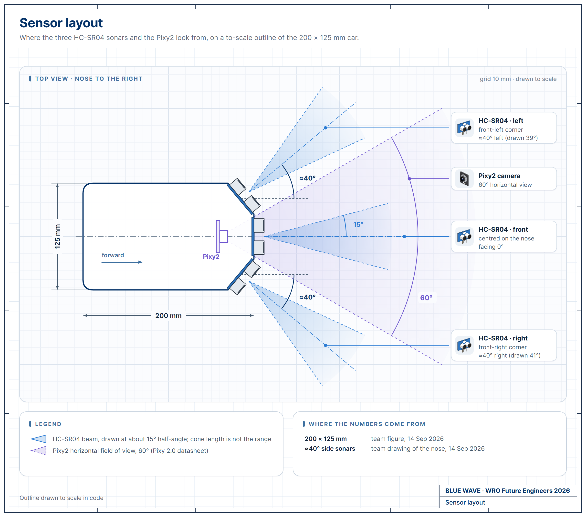
What the 40-degree side sonars changed in the code
Each side sonar also sees part of the wall ahead. That changed the code in four places:
- Corner ties. At the 48 cm front trigger both side units see the same front wall, so left minus right is close to zero and its sign flips from loop to loop.
open_kuwaitbroke ties by turning right. The finals code decides the turn from a vote of the corners already driven. - Drift toward the outer wall Simulation. The inner unit meets the wall at about 50 degrees incidence and often returns no echo. The code copies the other side's reading, the error becomes zero, and the car rides about 250-300 mm off the outer wall instead of centred.
- Late pillar sighting Simulation. After a corner that drift puts the first pillar at a 55-65 degree bearing, outside the Pixy2's 30 degrees each side, until it is close.
- One parking fit per side Simulation. Near a parallel wall a 40-degree unit returns the edge of its beam, not the axis, so the park keeps one linear fit per side:
mm = A × cm + B, A 5.16 / B 202.5 on the left and A 13.02 / B −50.2 on the right.
We kept the cant because our lane law does not depend on the bearing: a PD law on left minus right sees equal readings when the car is centred, at any sensor angle. Before we had a drawing of the nose, we had tuned laws in simulation for 90-degree flank sonars. On the real car those laws drove into the walls Mat.
HC-SR04 details we design around
| Item | What it means for us |
|---|---|
| Minimum range | The module sends 8 cycles at 40 kHz, a 200 µs burst. Sound covers 68.6 mm in that time, so an echo from nearer than about 34 mm returns while the burst is still going out. |
| Scale | NewPing converts at 57 µs per cm. At 20 °C the round trip takes 58.3 µs per cm, so readings are about 2.3 % long. |
| Timeout | A ping to the 400 cm limit can wait 400 × 57 µs ≈ 23 ms for an echo that never comes. |
| Firing order | Left, right, front, one after another, with a 3 ms pause before each. Each ping waits for its echo or timeout. |
| Filter | lpf = 0.9 × new + 0.1 × old: 90 % of each new reading passes, so the lane error follows each reading closely. |
2.4Camera
- It finds the trained colour signatures on its own processor and sends only block records: signature, x, width and height.
- The Uno never handles images. One 316 × 208 frame is 65,728 pixels; the Uno has 2,048 B of RAM.
- A block's x gives the pillar's bearing and its size gives the range.
- A 60-degree horizontal view: after a corner the first pillar can sit outside it until the car is close Simulation.
- The signatures are trained again under each venue's light, in the testing time of rule 13.18.
| Sig. | Trained on | Use in the finals code |
|---|---|---|
| 1 | Red pillar, RGB (238, 39, 55) | Pass on the pillar's right |
| 2 | Green pillar, RGB (68, 214, 44) | Pass on the pillar's left |
| 3 | Magenta limiter, RGB (255, 0, 255) | Declared as SIG_PARK_WALL; skipped |
A block in signature 1 or 2 is also rejected if it has the shape of a limiter: area of 600 px or more and width/height of 1.4 or more.
Bearing and range from the image. The range constants use a field of view of about 60 × 40 degrees on the 316 × 208 frame:
- bearing ≈ (x − 158) × 0.19 degrees;
- range = 13683 / width px or 28574 / height px for a 50 × 100 mm pillar, whichever is smaller.
In a simulator probe this range read about 5 % short straight ahead and up to 37 % short for a pillar 150-300 mm to the side Simulation. The front sonar may replace the camera range near the image centre, but only to make a pillar nearer.
2.5IMU
- It fuses its sensors on its own chip and sends one heading over I2C.
- That heading counts the 12 corners, ends the lot exit at 50 degrees, drives the U-turn guard and closes every park arc.
bno.begin()with no argument selects NDOF mode, so the magnetometer is part of the fusion and a magnetic field can move the heading. The corner count keeps 20 degrees of margin for that.- A failed I2C read can show as a heading of exactly 0.0. The code keeps the previous heading and resets a stuck bus after 25 ms.
The corner count adds each heading change, wrapped to ±180 degrees, to a total that is never reset, and counts a corner when the total reaches 90 × n + 70 degrees. If the Obstacle exit turns 20 degrees or more the wrong way on the heading, the sketch flips headingSign, so an IMU mounted the other way up still counts the right way.
2.6Two batteries
- Battery 1 (2S LiPo, 7.4 V nominal) connects straight to the Cytron MD13S power input and powers only the drive motor.
- Battery 2 goes through the main power switch to the Uno's VIN. The Uno's on-board regulator makes 5 V for the sensors and, through the ICSP header, the Pixy2.
- The motor's current flows only between battery 1, the MD13S and the motor. The current dips it pulls on battery 1, including the 70 ms kick at PWM 55, never reach the Uno's supply.
- Two packs to charge and check before every round.
- A flat battery 2 resets the Uno even when battery 1 is full.
setup()then sets the motor to 0 and the servo to 90 and waits for a new start input, so the round does not continue. - Battery 1 has no switch in its line, so the MD13S has power whenever battery 1 is connected. Its speed and direction come from the Uno on D3 and D8.
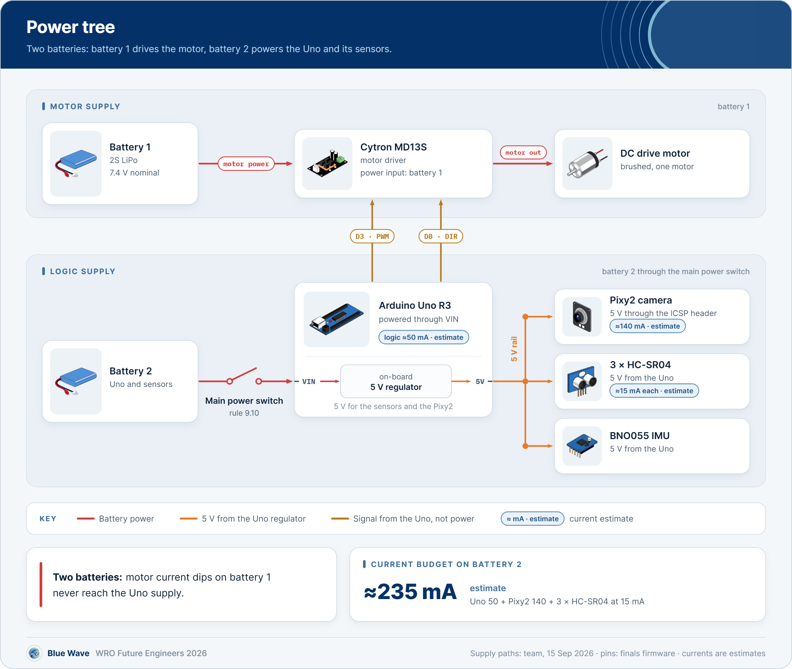
Current through the Uno's regulator
| Load | Current |
|---|---|
| Arduino Uno logic | about 50 mA |
| Pixy2, 5 V through ICSP | about 140 mA |
| 3 × HC-SR04, while pinging | about 15 mA each |
| Uno, Pixy2 and three sonars | about 235 mA |
Pixy2 and HC-SR04 figures from their datasheets; the Uno board figure is an estimate. Everything in this budget runs from battery 2; the drive motor has its own battery. The Pixy2 is about 60 % of the total.
Wiring rules we keep
- Motor current stays on battery 1 and never returns through the Uno header. Only signal ground goes to the Uno, as the reference for the PWM and DIR lines.
- We once connected a black lead near the Uno power header and got heat and a burnt component.
- After any wiring fault we measure the resistance from 5 V to GND with the power off before switching on again.
- One power switch and one start input, from A2 to GND with the internal pull-up (rules 9.10 and 9.11).
2.7Printed body and brackets
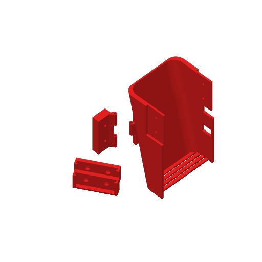
Models/BlueWave_main_body_v2.3mf is a Bambu Studio 02.01.01.52 project saved on 20 November 2025, with five parts on one plate. The raised "AUMers" lettering and the logo on this body are from AUMers, the name our club and team used before we competed as Blue Wave. The design is ours. The saved filament colour is red, and the car we race has an orange body.| Part in the file | Copies | Bounding box (mm) |
|---|---|---|
| Body shell | 1 | 79.0 × 123.0 × 58.0 |
| Ultrasonic sensor bracket | 2 | 32.7 × 47.4 × 19.0 |
| Ultrasonic and Pixy2 bracket | 1 | 49.3 × 15.3 × 23.5 |
| Pixy2 bracket | 1 | 49.3 × 6.7 × 29.7 |
| Print setting saved | Value |
|---|---|
| Printer | Bambu Lab X1 Carbon, 0.4 mm nozzle |
| Layers | 0.24 mm, first layer 0.20 mm |
| Infill, walls | 15 % grid; 2 loops |
| Supports | Tree (auto), 35° threshold |
| Filament | Generic PETG, nozzle 255 °C, plate 70 °C |
The two ultrasonic brackets and the combined bracket give three ultrasonic mounts, the same count as the HC-SR04 sensors on the car.
Software development by version
From the June national-round code to the v20 finals sketches. Every row below is a problem we found, the change we made and what it did.
Sources: Engineering decisions: version history · Software and strategy · Mobility: what changed since June · src/README.md
3.1Where the code started
The June sketch in this repository (commit 87508ae; both challenge folders held the same file) and the finals sketches share the race speed PWM 30, the servo limits and the gains KP 0.6 and KD 0.05. They differ here:
| Item | June sketch | Finals sketches |
|---|---|---|
| Corner trigger | FRONT_AVOID_CM 28 | 48 |
| Avoid speed | MOTOR_SPEED_AVOID 20, no kick | 25, plus the PWM 55 kick |
| Pillar ladder | One step: servo 140 for green, 40 for red | Three steps per colour: 140/120/102 and 40/60/78 |
| Start | Drives on power-up | Waits for a change on A2 |
| Lot exit and park | None | Ratchet exit, front-wall park |
The finals sketches are built on open_kuwait and obstacle_kuwait. Both already had the 48 cm trigger and PWM 25 with the kick. Only obstacle_kuwait had the three-step ladder; open_kuwait steered 140 or 40 on the largest Pixy2 block. Both drove off on power-up, and neither parked. The Obstacle sketch is built on the 6 September 2026 build, which is obstacle_kuwait plus fixes 15, 16 and 17.
3.2Version history
This history comes from our firmware folders and dated notes. The work between the national round and the v20 sketches was done in our local workspace and committed to main in September 2026, with every commit keeping its original date.
obstacle_kuwait Matint (a log printed area=-9646). Wrong-side passes; our fix notes give the likely cause, signature 1 trained on red while the code treated 1 as green. blocks[0] is the largest blob, not the nearest pillar. PWM 15 could not restart a stopped car.long. The code reads red as 1 and green as 2. Every block ranged, and the nearest within 900 mm steers. Avoid at PWM 25 plus the PWM 55 kick (fix 4).obstacle_kuwait, per our notes Matwhile(1).open_v20 Simulationobstacle_v20 Simulationsrc/ Buildopen_v20 and obstacle_v20 committed as Open_Challenge.ino and Obstacle_Challenge.ino with PRACTICE 0; nothing else changed.3.3How both sketches run
Both sketches are single .ino files with no local libraries, because we upload from the Arduino IDE. Each is one loop() that runs top to bottom:
Before the start the servo reports the IMU: one wiggle means ready, two wiggles repeating means the BNO055 did not answer and the car will not drive. waitStart() reads A2 with the internal pull-up and starts the round when the level has changed for 30 ms, so a push button and a toggle switch both work. With PRACTICE 1 the car would also start 3 s after power-up, which we use only on a practice table; both sketches in src/ have PRACTICE 0.
Open stays in that loop for the whole round. The Obstacle sketch runs the same loop inside a six-state machine, and its laps hand over to the park only when the car is parallel and clear of pillars, so the park starts from a known pose.
3.4What open_v20 does
Lane keeping. The error is e = left − right in centimetres, after the filter. The servo command is 90 + 0.6·e + 0.05·Δe, limited to 30-160. The integral gain is 0.
Corners. At 48 cm or less on the front sonar the car slows to PWM 25 and turns. Urgency = (48 − front) / (48 − 18), clamped to 0.25-1, so the servo reaches full travel at 18 cm. The side is chosen in this order:
- if left and right differ by more than 3 cm, the longer side;
- otherwise the majority of the corners already counted;
- before the first corner, the sign of a slow left-minus-right average, if it is at least 4 cm;
- otherwise right.
A U-turn guard holds the servo straight once the car has turned 100 degrees inside one avoid.
Laps and the finish. Corner n+1 counts when the never-reset turn total reaches 90·n + 70 degrees. After corner 12, once the front has read more than 180 cm twice (looking down the start straight), the car stops at the first two readings of 150 cm or less. A 700 ms backstop after corner 12 stops it anyway.
Faster straights. In lap 1 the car records the largest error on each straight, more than 700 ms after the corner with the front over 150 cm. In laps 2 and 3 a straight whose lap-1 maximum stayed under 25 cm runs at PWM 38 while the error is under 18 cm and the front reads over 150 cm. Every corner starts at PWM 30.
Stiction kick. Whenever the commanded PWM is above 0 and below 30, the motor gets PWM 55 for the first 70 ms, then 70 ms of PWM 55 every 500 ms.
Camera call. Open calls pixy.ccc.getBlocks() every loop and ignores the result, so each loop takes as long as it did in the open_kuwait runs on the mat.
3.5What obstacle_v20 does
The six states are in the figure in section 3.3. This section follows one Obstacle round through them.
Start, outer-wall pick and lot exit
Standing still for 500 ms, the car averages both side sonars. The shorter side is the outer wall, which also seeds the corner vote with a weight of 2: outer wall on the left means the round is clockwise and the corners turn right. We place the car about 40 mm from the outer wall every time.
One exit ratchet cycle is: pause 220 ms with the wheels at full lock toward the wall, reverse 200 ms at PWM 18, pause 220 ms at the opposite lock, forward 200 ms at PWM 18. Cycles repeat until the heading is 50 degrees out or 20 cycles have run, then the car drives straight for 800 ms at PWM 18. These are the values of the 6 September build whose exit worked on the mat. The exit's rotation is carried into the turn total (fix 26).
Pillars
Each loop reads up to 8 Pixy2 blocks. A block counts as a pillar only if its signature is 1 or 2, it is not shaped like a limiter, its area is at least 200 px and its x is between 20 and 300. Only pillars within 900 mm steer the car. The nearest wins, and the colour lock switches only if the other pillar is at least 250 mm nearer.
Beyond 550 mm the servo target is pulled toward 90 by k = (900 − range) / 350, never below 0.35. Pillar mode starts after 2 good frames, if 280 ms have passed since the last change or the pillar is within 550 mm, and ends after 3 missed frames and 280 ms.
| Pillar | x in the 316 px frame | Servo target |
|---|---|---|
| Green | x < 120 | 140 (hard left) |
| Green | 120 ≤ x < 170 | 120 |
| Green | x ≥ 170 | 102 (soft left) |
| Red | x > 200 | 40 (hard right) |
| Red | 150 < x ≤ 200 | 60 |
| Red | x ≤ 150 | 78 (soft right) |
In pillar mode the servo slews at most 6 degrees per loop; a front reading of 25 cm or less snaps it to full travel on the target side; and if the side sonar toward the turn reads under 25 cm, the command is capped at 90 + (target − 90) × (side − 16) / 9, so the car cannot steer hard into a wall it is already close to.
Lap-1 map, scan weave and stuck recovery
- Lap-1 map. In lap 1 the car stores the colours of the first two pillars that put it into pillar mode on each straight. In laps 2 and 3, for up to 1.6 s after a corner and once the heading is within 12 degrees of the new straight, it moves the lane set-point 20 cm toward the side the first mapped pillar needs.
- Scan weave. With no pillar in view and |L − R| under 6 cm, a ±5 degree sine with a 1.3 s period sweeps the camera view across the frame edges.
- Stuck recovery. If the last front reading is 15 cm or less and the heading has not moved 3 degrees in 0.7 s, the car sets opposite lock and reverses: PWM 55 for 70 ms, PWM 30 for 450 ms, then stops for 120 ms.
Control priority inside lapStep():
3.6The front-wall park
After three laps the front HC-SR04 measures the wall at the end of the start straight at near-normal incidence. The car stops at a mark computed from that distance, then reverses into the lot on IMU-closed arcs and measured straight steps.
Why the front wall. We measured the distance from the far wall to the downstream limiter on a mat: about 1.0 m with the lot on the car's right and about 1.7 m with it on the left Team. That matches the rulebook. Inside the bay the side units are near their 34 mm minimum and lose the echo at oblique angles, and the camera faces away from the lot the car reverses into. So while the car manoeuvres, the IMU heading is the reading we trust.
The stop mark. mark = lot distance − 200 − (−40). With LOT_RIGHT_MM 980 the mark is 820 mm for a lot on the right. The lot-left distance is 3000 − 340 − 980 = 1680 mm, so that mark is 1520 mm. During the approach a far-wall tracker rejects echoes from the limiter tips, which read about 900 mm short of the wall.
A step is 25 ms at PWM 55, 25 ms at PWM 22, then 380 ms to settle. Every arc runs at PWM 18 and is closed on the IMU heading; the motor is cut early by the turn rate × 150 ms because the car keeps turning while it coasts, and arcs are capped at 2.6 s. Before each arc in C and E and each straight step in D, the 200 × 125 mm car outline is checked against both limiters and the wall with a 12 mm margin.
3.7How we change the code
Our rule since versions 8-17: before we try a change we write down the input, the state, the computed value and the wrong action it fixes. In our simulator we compare the change against the previous version on the same seeds. On the mat a new sketch runs in practice time first.
KP 0.6 and KD 0.05 are unchanged from the June sketch, and the ladder thresholds (x 120 and 170 for green, 150 and 200 for red) come from fix 8 in obstacle_kuwait. We kept them because the builds that carried them drove on the mat.
Testing method and results
Our mat results come from our earlier builds. Every v20 result comes from our simulator, and each one carries that label.
Sources: Build, test and reproduce · Power and sensors: calibration procedures · Software and strategy: how we tune
4.1How we test
real2, each change against the previous version on the same seedsA mat test of an Obstacle sketch is 20 runs from legal random starts. For each run we record the exit, laps, pillars touched and park result, and we report the success rate. In simulation we record per batch:
| Metric | Open | Obstacle |
|---|---|---|
| Full score | 3 laps and a stop in the start section (30/30) | Exit, 3 laps, park type |
| Where it failed | Wall crash, wrong direction, first corner, stop outside the section | Wrong-side pass, reversed, limiter, stuck |
| Quality | Lap-3 median time, wall grazes per run | Sections completed, grazes per run |
Ten-minute bench check
Car on a stand with all four wheels off the table, both batteries charged and battery 1 connected to the MD13S, serial monitor at 115200 baud.
| # | Check | Pass |
|---|---|---|
| 1 | Library versions on the upload laptop | Versions match Appendix B |
| 2 | Verify the sketch | Sizes match Appendix B; #define PRACTICE 0 |
| 3 | Upload, then switch on with the main switch | One servo wiggle. Two wiggles repeating: BNO055 not answering, check A4/A5 |
| 4 | Obstacle sketch: read the serial monitor | WAIT L .. R .. F .. yaw .. every 400 ms |
| 5 | Hand 20 cm in front of each sonar in turn; nose square to a wall at a taped 50 cm | L, R and F each change; F reads about 51 |
| 6 | Turn the car clockwise by hand | yaw increases |
| 7 | Wait 5 s after power-on | Wheels do not turn |
| 8 | Change the A2 switch | Obstacle: outer wall = LEFT/RIGHT prints, then the servo alternates full locks. Open: the drive wheels turn |
| 9 | PixyMon with a red, a green and a magenta object at 900 mm | Boxes with signatures 1, 2 and 3 |
| 10 | Voltage of battery 1 and battery 2 with a meter, written on the test sheet | Two numbers: battery 1 so speed results can be matched to charge, battery 2 because a flat battery 2 resets the Uno |
Calibration checks in practice time
| Check | How | Pass |
|---|---|---|
| Pixy2 signatures | In PixyMon, under the venue light: signature 1 on a red pillar, 2 on a green pillar, 3 on a magenta limiter | One box with the right signature at 900 mm |
| Pixy2 range | Pillar 500 mm straight ahead; read its width and height in PixyMon | About 27 px wide and 57 px tall, matching 13683 and 28574 |
| IMU direction | Obstacle sketch waiting; turn the car clockwise by hand | yaw increases |
| Front range | Car square to a wall; tape from the nose | F matches the tape within about 3 % |
| Side sonars | Hand in front of each side unit | L and R change |
| Outer-wall pick | Car in the lot about 40 mm from the outer wall, facing the driving direction; start | Prints outer wall = LEFT or RIGHT, matching the real wall |
Park constants and how to set them on a mat
| Constant | Now | Procedure |
|---|---|---|
LOT_RIGHT_MM | 980 | Tape from the far wall to the far face of the downstream limiter, lot on the car's right. LOT_LEFT_MM follows as 3000 − 340 − LOT_RIGHT_MM |
R_PARK_MM | 170 | Servo at 170, push the car slowly through a full circle, mark the rear-axle centre, halve the diameter. Repeat at servo 10 |
SIDE_A_L, SIDE_B_L, SIDE_A_R, SIDE_B_R | 5.16, 202.5, 13.02, −50.2 | Car parallel to a wall with the rear axle 300 mm and then 400 mm from it; read that side's sonar in cm. A = 100 / (cm400 − cm300), B = 300 − A × cm300 |
CAR_NOSE_MM | 168 | Rear-axle centre to the front bumper, steel rule |
PARK_LANE_MM | 320 | Rear axle to the outer wall during the approach; check that it clears the limiter tips at 200 mm |
4.2Results on the mat Mat
| Date | Code | What happened |
|---|---|---|
| June 2026 | National-round code | 1st place, 61 points, Kuwait national round |
| Before Sep 2026 | Motor test | PWM 15 does not start the car from rest, 18 creeps, 25 always moves it |
| 2 Sep 2026 | obstacle_kuwait, as listed in our notes | Three full Obstacle laps with one light touch on one pillar |
| 6 Sep 2026 | 6 September parking build | Lot exit worked; our best Obstacle driving so far, with light scrapes; did not park (lap counter, fixed as fix 26) |
| By 11 Sep 2026 | open_kuwait, PWM 30 | Three Open laps in about 23 s |
| 14 Sep 2026 | Finals build of that day | The car did not move; four causes found and fixed (chapter 5) |
4.3Results in simulation Simulation
real2 compiles the unchanged .ino with a PC compiler and runs it against a model of our car; only while(1); is rewritten, to a halt. The model has the 200 × 125 mm outline with side sonars at 39 and 41 degrees, HC-SR04 acoustics including a 38-60 ms hold when no echo returns, a Pixy2 at 60 frames per second, a BNO055 with drift and noise, the time cost of serial printing, tyre grip and wall contact. Each seed randomises the turning radius (±15 %), speed (±12 %), break-away (PWM 16-18), servo speed, start pose and sonar dropout.
Fidelity gates: does the model reproduce the real car?
| Gate | Real car | Target | Simulator | Verdict |
|---|---|---|---|---|
open_kuwait, 3 laps | Reliable | ≥ 80 % | 33/60 = 55 % (clockwise 77 %, counter-clockwise 24 %) | Fail |
obstacle_kuwait, 3 laps, no pillar moved | Three laps, one light touch, 2 Sep 2026 | ≥ 60 % | 1/60 = 2 % | Fail |
| 6 September build, lot exit | Worked on 6 Sep 2026 | ≥ 80 % | 58/60 = 97 % | Pass |
Calibration F3, 60 seeds from 10,500,000. Both failed gates score below the real car, so the simulator is harsher than the car.
The v20 sketches
| Sketch | Test | Result |
|---|---|---|
| Open v20 | Paired with open_kuwait on the same seeds | 37/40 against 21/40 |
| Open v20 | Final file, 40 fresh seeds from 9,100,000 | 36/40; lap-3 median 25.6 s; 0.1 wall grazes per run |
| Open v20 | All 32 draw cells (16 corridor combinations × 2 directions), 320 runs | 287/320 = 90 % scored 30/30; lap-3 median 26.0 s; 0.14 grazes per run |
| Open v20 | Calibration F3, 60 seeds | 55/60 = 92 % |
| Obstacle v20 | 60 lot starts from 9,200,000 | Exit 60/60; three laps 1/60; endings: wrong-side pass 35, reversed 8, limiter 10 |
| Obstacle v20 | 120 lot starts from 10,500,000, F3 | Exit 119/120; three laps 12/120; of those, 3 partial parks and 0 full |
| Obstacle v20 | Park only, from the lap-3 handover pose, 16 runs | 4 full parks; limiter touched in about half |
The 37/40 comes from the paired comparison during development; the final file on fresh seeds scored 36/40, and that is the number we quote for v20. The gap between 1/60 and 12/120 three-lap Obstacle rounds comes from the seed blocks, not from the calibration.
Where Open v20 fails: 33 of 320 runs
| Failure | Runs |
|---|---|
| Wall crash mid-round | 11 |
| Wrong turn direction | 8 |
| At the first corner (5 stuck, 1 crash) | 6 |
| Three laps, stopped outside the start section | 6 |
| Other | 2 |
Weakest corridor cells
| Cell | Direction | Success |
|---|---|---|
| 600-1000-1000-600 | Counter-clockwise | 7/11 |
| 600-1000-1000-1000 | Clockwise | 7/10 |
| 600-1000-600-1000 | Counter-clockwise | 8/11 |
Webots replays
Webots draws the rulebook field and moves the car along a path logged by real2. It is a kinematic replay with no physics, and the verdict on screen is copied from our arena scorer. The seven v20 replays:
- Open, clockwise (seed 7100007)
- Open, counter-clockwise (seed 7100003)
- Obstacle, three laps, no park, counter-clockwise (seed 6200015)
- Obstacle, three laps, no park, clockwise (seed 6200035)
- Obstacle, the typical failure: inner-row pillar right after a corner (seed 6100004)
- Park only, full park, clockwise (seed 8100000)
- Park only, partial park, counter-clockwise (seed 8100007)
Problems we met and how we fixed them
Each card is a problem recorded on our pages: what we saw, why it happened, and what we changed. Most came from the mat; the cards with a light edge came from simulation.
Sources: Engineering decisions: decision log and what failed · Power and sensors: sensing bugs we fixed · Mobility: break-away
5.1Drive and power
5.2Sensing and the camera
area=-9646 for a pillar at about 30 cm, and the pillar was ignored.int.long.blocks[0] is the largest blob, not the nearest pillar.frontDist, which fed the 25 cm full-lock rule. One variable served two subsystems.open_kuwait broke ties by turning right.5.3Laps, parking and the code itself
open_kuwait closed a lap at every 360 degrees.while(1)..ino per challenge, sized with the IDE's compiler; the v20 Obstacle sketch fits at 29,604 B with stock flags. The servo wiggles twice, repeating, when the BNO055 fails. The v20 exit keeps PWM 18, the value of the 6 September exit that worked on the mat, and we watch the first practice exits.ZumoBuzzer.cpp and ZumoMotors.cpp. Neither sketch calls them, but they add 1,674 B of flash and 57 B of RAM to each build..cpp.bak. With them in place the Obstacle sketch is 31,278 B (96 %); without them, 29,604 B (91 %).Current state and next changes
Where the car and its code stand on 15 September 2026, the problems still open, and the changes we test next.
Sources: Engineering decisions: v20 status, risks and changes we test next · src/README.md: constants to calibrate
6.1v20 status
| Part | State on 15 Sep 2026 | Evidence |
|---|---|---|
Open_Challenge.ino (open_v20) | Frozen, PRACTICE 0, compiles at 15,136 B | Simulation: 36/40 on fresh seeds, 287/320 across all draw cells |
Obstacle_Challenge.ino (obstacle_v20) | Frozen, PRACTICE 0, compiles at 29,604 B | Simulation: exit 119/120, three laps 12/120 |
| Front-wall park | Part of the Obstacle sketch; park constants set in simulation | Simulation: 4 full parks in 16 park-only runs |
open_v21 | In development | A fixed path at each corner, a stronger direction choice, a mid-straight stop on the front sensor |
6.2Problems still open
Obstacle inner-pillar failure Simulation
In 23 of 24 wrong-side passes we traced, the pillar needed an inner pass: green when driving counter-clockwise, red when clockwise. Most were in the inner row, first in the straight. The mechanism is the outer-wall drift from the 40-degree sonars (section 2.3). None of these changes moved the success rate, 60 seeds each:
- an inward sweep after corners;
- earlier corner triggers at 60, 70 and 80 cm;
- engaging pillars from 1200 mm;
- faster pillar-mode entry;
- a 0.7 floor instead of 0.35;
- a stronger steering ladder;
- a bearing-offset tracking law;
- treating a silent side as long;
- disabling the fix-16 wall clamp.
Our next attempt plans the lane after each corner instead of changing another constant.
The park Simulation
Among 12 three-lap runs out of 120 there were 3 partial parks and 0 full parks. From the lap-3 handover pose alone, 4 of 16 parks were full, and the limiter was touched in about half. An earlier simulator model found the park succeeds only when its counter-steer leg starts inside a window about 37 mm wide, while open-loop positioning scattered with a standard deviation of about 24 mm. That is why v20 measures its step length and solves the entry angle from the real stop pose.
6.3Before every official round
PRACTICEis 0 in the uploaded sketch. With 0 the car stays still after power-up until A2 changes.- Pixy2 trained in PixyMon under the venue light: signature 1 red, 2 green, 3 magenta.
- Obstacle car placed about 40 mm from the outer wall, the same gap every attempt.
- On the bench, turn the car clockwise by hand:
yawin theWAITline rises. - Both batteries charged; voltages written on the test sheet.
6.4Changes we test next
Each candidate names the mechanism it addresses before we write any code.
| Candidate | Mechanism it addresses | Test before it ships |
|---|---|---|
BNO055 in IMUPLUS mode, bno.begin(OPERATION_MODE_IMUPLUS) | A magnetic field moving the NDOF heading and counting a phantom corner | Heading drift over 3 minutes standing, and 12-corner counts, in both modes |
| Corner-exit lane plan for Obstacle, from the lap-1 map or the camera during the turn | Outer-wall drift puts the first pillar outside the camera view | 60 lot-start seeds against v20, then practice runs |
| Rear-facing HC-SR04 on two free pins (TRIG and ECHO from A0, A1, A3, D6) | The park's reverse leg is dead-reckoned into a 37 mm window | Park-only runs in simulation, then on the mat |
6.5Risks and what we do about them
| Risk | What we would see | Mitigation |
|---|---|---|
PRACTICE 1 in an official round | Car moves 3 s after power-up, breaking rule 9.11 | src/ has PRACTICE 0; bench check before every round |
| Start input does not reach A2 | Car never starts with PRACTICE 0 | Bench check step 8: change the switch and watch the car respond |
| BNO055 not answering | Servo wiggles twice, repeating | Visible fault code instead of a silent hang |
| NDOF magnetometer moves the heading | Phantom or missed corner | 20 degrees of margin in the corner count; IMUPLUS mode is a change we test next |
| Exit creeps at PWM 18, below the 25 break-away value | Car stalls in the lot | Same values as the 6 September exit that worked on the mat; we watch the first practice exits |
| Wrong outer-wall pick | Car exits the wrong way | Place the car about 40 mm from the outer wall; check the printout |
| Inner sonar silent in a 1000 mm corridor | Car rides off the outer wall and misses the next pillar | A corner-exit lane plan is a change we test next |
| Park constants set in simulation | Park too shallow, too deep or touching a limiter | The car measures its own step length and closes every arc on the IMU; the mat procedures in chapter 4 set the constants in practice time |
| Park window missed | Car would start lap 4 | Stops at the next corner in the start section |
| Obstacle v20 drives worse than our earlier build in practice | Wrong direction or pillar hits | If it drives the wrong way or hits pillars twice in practice, we switch to the earlier build |
| Pixy2 range constants off for our lens | Pillars engage at the wrong distance | Width check in PixyMon: a pillar 500 mm straight ahead reads about 27 px wide |
| Battery 1 charge changes speed | Timed moves behave differently on a flat motor battery | Arcs closed on the IMU, steps measured before use; battery 1 voltage written down before every session |
| Battery 2 runs flat | The Uno resets mid-round; setup() sets the motor to 0 and waits for a new start input | Battery 2 voltage written down before every session (bench check step 10) |
| Flash near the limit | A new feature does not fit | Size checked with the IDE compiler before upload |
| Motor battery negative through the Uno header | Heat, burnt parts | Motor current kept on battery 1 and off the Uno header; 5 V to GND checked with power off after a fault |
Appendix: pin map and system overview
The pins are identical in both sketches: Open_Challenge.ino lines 30-35 and Obstacle_Challenge.ino lines 51-56.
Sources: Build, test and reproduce: wiring · src/README.md: pin map
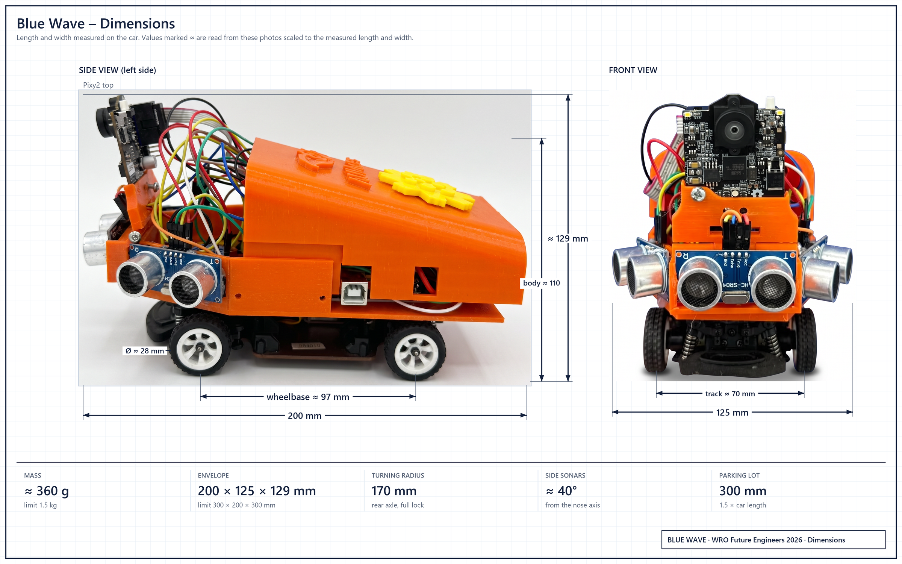
docs/01-mobility.md.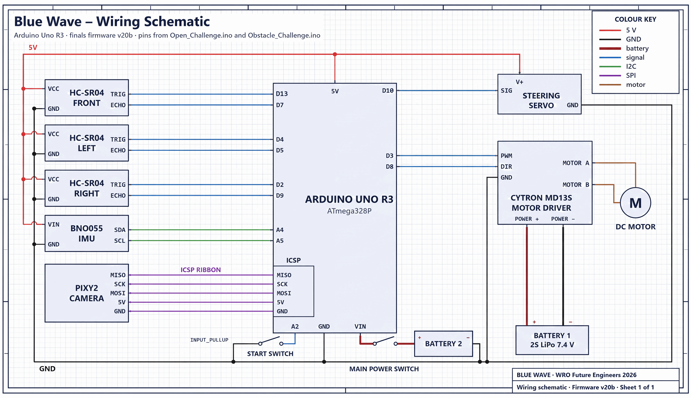
Schemes/wiring_schematic_source.svg.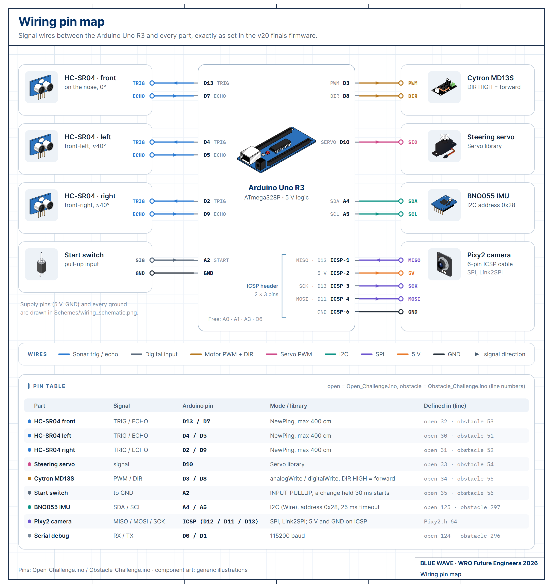
| Part | Signal | Uno pin | Code object and mode |
|---|---|---|---|
| HC-SR04, left front corner | TRIG / ECHO | D4 / D5 | sonarLeft, NewPing, 400 cm limit |
| HC-SR04, right front corner | TRIG / ECHO | D2 / D9 | sonarRight, NewPing |
| HC-SR04, nose | TRIG / ECHO | D13 / D7 | sonarFront, NewPing |
| Steering servo | Signal | D10 | steeringServo, Servo library |
| Cytron MD13S | PWM / DIR | D3 / D8 | runMotor(); DIR HIGH = forward |
| Start switch, other side to GND | Input | A2 | waitStart(), INPUT_PULLUP; a change held 30 ms starts |
| BNO055 IMU | SDA / SCL | A4 / A5 | bno, I2C address 0x28, 25 ms bus timeout with reset |
| Pixy2 camera | SPI | ICSP: MOSI D11, MISO D12, SCK D13 | pixy, Link2SPI; 5 V and GND on the ICSP header |
| USB serial | RX / TX | D0 / D1 | Debug print, 115200 baud |
| Free | - | A0, A1, A3, D6 | - |
Steering convention for every law: above 90 steers left, below 90 steers right. The lap laws stay within 30-160; the Obstacle lot exit and park use full lock at 10 (right) and 170 (left). The Servo library takes Timer1, which removes PWM from D9 and D10, so D9 is only an echo input and the motor PWM is on D3.
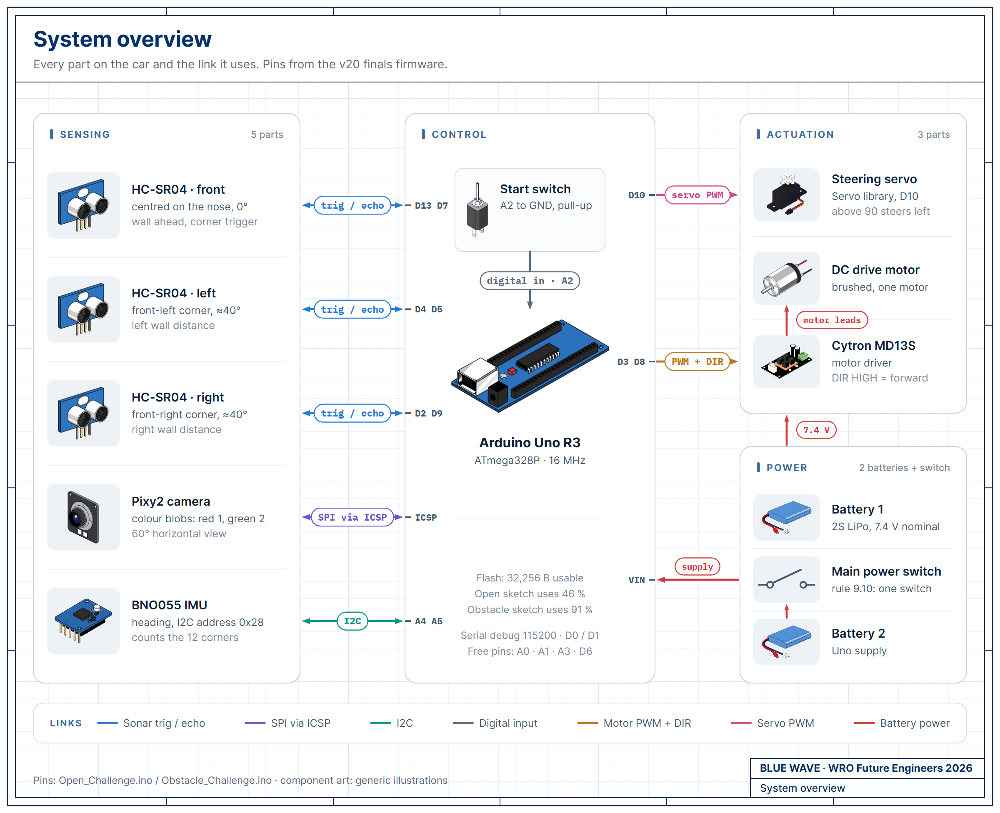
Appendix: parts list and software versions
Everything needed to build the car and to compile the two sketches to the same sizes.
Sources: Build, test and reproduce: bill of materials, software versions and expected sizes
B.1Parts list
| Qty | Part | Job | Connection |
|---|---|---|---|
| 1 | Arduino Uno R3 (ATmega328P, 16 MHz) | Runs one challenge sketch at a time | USB for upload and serial; VIN from battery 2 |
| 1 | Cytron MD13S motor driver | Drives the motor from PWM and direction | PWM D3, DIR D8; power input from battery 1 |
| 1 | Brushed DC drive motor | Propulsion through the chassis gearbox | MD13S output |
| 1 | Hobby steering servo | Ackermann steering | Signal D10 |
| 1 | WLtoys 1:28-class RC chassis with wheels, gearbox and steering linkage | Frame and drivetrain | - |
| 3 | HC-SR04 ultrasonic sensor | Front, left and right distance | D13/D7, D4/D5, D2/D9; 5 V from the Uno |
| 1 | Pixy2 camera | Pillar colour, bearing and range | ICSP header (SPI and 5 V) |
| 1 | BNO055 IMU breakout | Heading | A4 (SDA), A5 (SCL); 5 V from the Uno |
| 1 | Battery 1: 2S LiPo, 7.4 V nominal | Powers only the drive motor | Straight to the MD13S power input |
| 1 | Battery 2 | Powers the Uno; the Uno's regulator makes 5 V for the sensors and the Pixy2 | Main power switch, then the Uno's VIN |
| 1 | Main power switch | Rule 9.10: one switch turns the car on | Between battery 2 and the Uno's VIN |
| 1 | Start switch or push button | Rule 9.11: one start button | A2 to GND |
| 1 set | Printed body and sensor brackets | Mounting | Models/BlueWave_main_body_v2.3mf: main body, two ultrasonic brackets, one ultrasonic and Pixy2 bracket, one Pixy2 bracket |
B.2Software versions
| Item | Version |
|---|---|
| Arduino IDE | 2.3.10 (bundled arduino-cli 1.5.1) |
| Arduino AVR Boards core | 1.8.8, board arduino:avr:uno |
| Servo | 1.3.0 |
| Wire | Bundled with the core |
| Adafruit BNO055 | 1.6.4 |
| Adafruit Unified Sensor | 1.1.15 |
| Adafruit BusIO | 1.17.4 |
| NewPing | 1.9.7 |
| Pixy2 | Arduino library from pixycam.com, installed by hand |
Installed on our development PC on 15 September 2026. The upload laptop must have the same versions; bench check step 1 compares them.
B.3Build steps
- In the Boards Manager install Arduino AVR Boards 1.8.8 and select Arduino Uno.
- In the Library Manager install the versions in the table. Copy the Pixy2 library into
Documents/Arduino/libraries/, then renameZumoBuzzer.cppandZumoMotors.cppto.cpp.bak. - Open
src/Open_Challenge/Open_Challenge.inoorsrc/Obstacle_Challenge/Obstacle_Challenge.ino. - Check that line 36 (Open) or line 62 (Obstacle) reads
#define PRACTICE 0. - Verify: the output must match the sizes below.
- Connect the Uno over USB, select its port, press Upload.
- Train the Pixy2 signatures in PixyMon, then run the bench check.
B.4Expected sizes Build
| Build | Open_Challenge.ino | Obstacle_Challenge.ino |
|---|---|---|
| Stock compiler flags, Zumo files renamed | 15,136 B (46 %), RAM 721 B | 29,604 B (91 %), RAM 818 B |
| Stock compiler flags, Pixy2 library as downloaded | 16,810 B (52 %), RAM 778 B | 31,278 B (96 %), RAM 875 B |
| Our PC's extra flags, Zumo files renamed | 14,630 B (45 %), RAM 721 B | 28,682 B (88 %), RAM 818 B |
Compiled on 15 Sep 2026 with the IDE's own arduino-cli 1.5.1 and AVR core 1.8.8, from the files in src/, each with a fresh build folder, out of 32,256 B of flash. Our development PC also has a platform.local.txt that adds -mcall-prologues -mrelax; neither sketch needs it. If a build reports a different size on another PC, check the Zumo files and this file first.